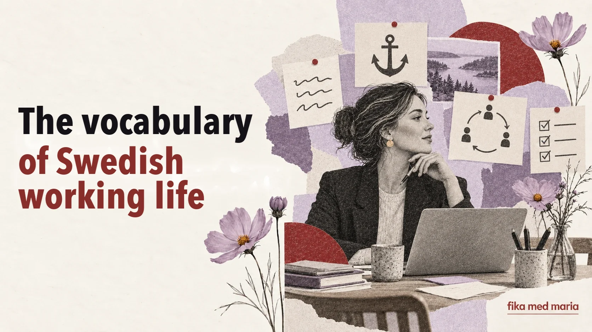

Prestigelös, förankra, avstämning: the vocabulary you need to understand Swedish working life

The job ad says the company is looking for en prestigelös lagspelare. In the meeting you need to förankra beslutet. There’s an avstämning in the calendar, and afterwards everyone is waiting for återkoppling.
Every one of these words can be translated. But a literal translation isn’t enough: there’s a whole way of working behind each one.
Prestigelös
Prestigelös – someone who doesn’t cling to status, doesn’t see certain tasks as “beneath them” and can admit mistakes.
In a job ad, this often means they expect that you:
- work with others without acting superior;
- can both manage and do hands-on work;
- take feedback calmly;
- put the team’s results above personal prestige.
It’s a positive word, but in an interview, rather than just calling yourself prestigelös, it’s better to give an example of how you behave.
Förankra
The literal image is of anchoring something in place. In a work context, förankra ett beslut means to discuss a decision with the key people involved and win enough support before it is put into practice.
Vi behöver förankra förslaget i teamet.
We need to agree the proposal with the team.
It’s more than announcing a decision that has already been made. It’s often a process in which people need to understand the reasoning and have the chance to speak up.
Avstämning
Avstämning – a short check-in on status, expectations or next steps.
Ska vi boka en kort avstämning på fredag?
Shall we schedule a short check-in for Friday?
It might be a ten-minute call or a regular meeting. If the calendar entry just says avstämning, it’s worth asking what it’s for: the status of the project, dividing up the work or discussing a problem.
Återkoppling
Återkoppling – feedback, or a reply once a matter has been looked into.
Jag återkopplar senast på torsdag.
I’ll get back to you with an answer by Thursday at the latest.
This is a very useful verb for emails. It doesn’t promise a finished solution straight away, but it sets expectations about when you’ll reply.
Delaktighet and samsyn
Delaktighet – involvement and the chance to take part.
Samsyn – a shared understanding of a situation, or an agreed way of seeing it.
Det är viktigt att alla känner sig delaktiga.
It’s important that everyone feels involved.
Vi behöver skapa en samsyn kring målen.
We need to build a shared understanding of the goals.
These words explain why a decision is sometimes discussed for longer than someone from a more top-down workplace culture would expect.
Högt i tak
Literally, “high ceiling”. In a team it means an atmosphere where people can voice different opinions and aren’t afraid of disagreement.
Vi har högt i tak och uppskattar nya idéer.
But a phrase in a job ad doesn’t in itself guarantee real openness. In an interview you can ask:
Kan ni ge ett exempel på hur ni hanterar oenighet i teamet?
Eget ansvar and frihet under ansvar
Eget ansvar means personal responsibility for organising your work. Frihet under ansvar – the freedom to choose how you carry out a task, as long as the result is delivered and agreements are kept.
This can feel comfortable, but it takes the ability to:
- ask clarifying questions;
- plan on your own;
- flag risks before the deadline;
- not wait for detailed instructions for every step.
What’s the best way to tell a colleague: “I don’t have an answer yet, but I’ll get back to you tomorrow”?
Jag har inget svar än, men jag återkommer i morgon.
Try replacing i morgon with a specific time to make the phrase even more reliable.
In one-to-one lessons we can work on your job ads, emails, meetings and professional vocabulary – not on an abstract “textbook office”. One-to-one lessons.
Do you need to use these words in an interview?
Only if you really understand them and can back them up with an example. Mechanically repeating words from a job ad sounds unnatural.
What does återkomma mean in emails?
To get back to someone with an answer, or to pick the matter up again later: Jag återkommer på måndag.